Lines and Planes in SpaceĐường thẳng và mặt phẳng trong không gian
Grade 11 · Topic: Parallelism in SpaceLớp 11 · Chủ đề: Quan hệ song song trong không gian
1Lesson IntroductionGiới thiệu bài học
Learning goalsMục tiêu bài học
By the end of this lesson you can:
Sau bài học này, em có thể:
recognise points, lines, planes and the basic axioms;
nhận biết điểm, đường thẳng, mặt phẳng và các tiên đề cơ bản;
decide when points and lines determine a plane;
xác định khi nào điểm, đường thẳng xác định một mặt phẳng;
find the common point of a line and a plane, and the line of intersection of two planes;
tìm giao điểm của đường thẳng với mặt phẳng và giao tuyến của hai mặt phẳng;
describe pyramids and tetrahedra and find a simple cross-section.
mô tả hình chóp, tứ diện và xác định thiết diện đơn giản.
2Mathematical VocabularyTừ vựng Toán học
plane – a flat surface that goes on forever; written \((P)\) or \((ABC)\).
mặt phẳng – bề mặt phẳng kéo dài vô hạn; kí hiệu \((P)\) hoặc \((ABC)\).
collinear points – points on the same line.
ba điểm thẳng hàng – các điểm cùng nằm trên một đường thẳng.
coplanar – lying in the same plane.
đồng phẳng – cùng nằm trong một mặt phẳng.
lies in – is contained in a plane.
nằm trong – thuộc (chứa trong) một mặt phẳng.
line of intersection – the common line of two planes.
giao tuyến – đường thẳng chung của hai mặt phẳng.
common point – a point that belongs to both objects.
điểm chung – điểm thuộc cả hai đối tượng.
pyramid – a solid with a polygon base and triangular faces meeting at the apex.
hình chóp – khối có đáy là đa giác và các mặt bên là tam giác chung đỉnh.
tetrahedron – a pyramid with a triangle base: four triangular faces.
tứ diện – hình chóp có đáy là tam giác: bốn mặt đều là tam giác.
cross-section – the polygon cut from a solid by a plane.
thiết diện – đa giác tạo bởi mặt phẳng cắt khối.
3Useful English PhrasesCụm từ tiếng Anh thường gặp
Find the line of intersection.
Tìm giao tuyến.
The line lies in the plane.
Đường thẳng nằm trong mặt phẳng.
The three points are not collinear.
Ba điểm không thẳng hàng.
Find the common point.
Tìm điểm chung.
Name the faces of the pyramid.
Kể tên các mặt của hình chóp.
4Prerequisite ReviewÔn tập kiến thức nền
In the plane: two points define one line; two lines meet in at most one point; two parallel lines have no common point. Triangle, parallelogram and midpoints are used often.
Trong mặt phẳng: hai điểm xác định một đường thẳng; hai đường thẳng cắt nhau nhiều nhất tại một điểm; hai đường thẳng song song không có điểm chung. Hay dùng tam giác, hình bình hành và trung điểm.
5TheoryLý thuyết
5.1 Basic facts about points, lines and planesCác tính chất cơ bản
AxiomsTiên đề
Two different points lie on exactly one line.
Hai điểm phân biệt thuộc một và chỉ một đường thẳng.
Three points that are not collinear lie in exactly one plane.
Ba điểm không thẳng hàng thuộc một và chỉ một mặt phẳng.
If two points of a line lie in a plane, the whole line lies in the plane.
Nếu hai điểm của một đường thẳng thuộc mặt phẳng thì cả đường thẳng nằm trong mặt phẳng.
If two different planes have a common point, they have a common line through that point (the line of intersection).
Nếu hai mặt phẳng phân biệt có một điểm chung thì chúng có một đường thẳng chung đi qua điểm đó (giao tuyến).
There are four points that are not in one plane.
Có bốn điểm không cùng nằm trong một mặt phẳng.
5.2 Ways to determine a planeCác cách xác định mặt phẳng
A plane is determined byMặt phẳng được xác định bởi
three points that are not collinear;
ba điểm không thẳng hàng;
a line and a point not on the line;
một đường thẳng và một điểm không thuộc đường thẳng đó;
two intersecting lines;
hai đường thẳng cắt nhau;
two parallel lines.
hai đường thẳng song song.
5.3 Intersection of a line and a plane, and of two planesGiao điểm, giao tuyến
MethodCách làm
Line \(a\) and plane \((P)\): find a line \(b\) in \((P)\) that meets \(a\); the meeting point is \(a\cap(P)\).
Đường thẳng \(a\) và mặt phẳng \((P)\): tìm đường thẳng \(b\) trong \((P)\) cắt \(a\); giao điểm đó là \(a\cap(P)\).
Two planes: find two common points; the line through them is the line of intersection.
Hai mặt phẳng: tìm hai điểm chung; đường thẳng đi qua hai điểm đó là giao tuyến.
5.4 Pyramids and tetrahedraHình chóp và tứ diện
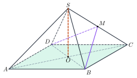
A pyramid whose base has \(n\) sides has \(n+1\) vertices, \(2n\) edges and \(n+1\) faces. A tetrahedron is a pyramid with a triangle base.
Hình chóp có đáy \(n\) cạnh có \(n+1\) đỉnh, \(2n\) cạnh và \(n+1\) mặt. Tứ diện là hình chóp có đáy là tam giác.
Watch out!Lưu ý
Three collinear points lie in infinitely many planes. A common point of two planes gives a whole common line, not just one point.
Ba điểm thẳng hàng nằm trong vô số mặt phẳng. Hai mặt phẳng phân biệt có điểm chung thì có cả một đường thẳng chung, không phải chỉ một điểm.
6Worked ExamplesVí dụ có lời giải
ExampleVí dụ 1BasicCơ bản – Counting planesĐếm mặt phẳng
There are 5 points in space, no four of them in one plane. How many planes pass through three of them?
Cho 5 điểm trong không gian, không có bốn điểm nào đồng phẳng. Có bao nhiêu mặt phẳng đi qua ba trong số các điểm đó?
Analysis: Any three of the points are not collinear (otherwise four points would be coplanar).
Phân tích: Ba điểm bất kì không thẳng hàng (nếu không thì bốn điểm sẽ đồng phẳng).
Each choice of 3 points gives exactly 1 plane.
Mỗi cách chọn 3 điểm cho đúng 1 mặt phẳng.
\(\binom53=\dfrac{5\cdot4\cdot3}{6}=10\).
\(\binom53=\dfrac{5\cdot4\cdot3}{6}=10\).
10 planes.
10 mặt phẳng.
ExampleVí dụ 2BasicCơ bản – Faces and edgesMặt và cạnh
A pyramid has a base with 6 sides. Count its vertices, edges and faces.
Hình chóp có đáy là lục giác. Đếm số đỉnh, số cạnh, số mặt.
Analysis: Count the base and the lateral parts.
Phân tích: Đếm phần đáy và phần mặt bên.
Vertices: 6 base vertices + the apex = 7.
Đỉnh: 6 đỉnh đáy + 1 đỉnh chóp = 7.
Edges: 6 base edges + 6 lateral edges = 12. Faces: 6 lateral faces + 1 base = 7.
Cạnh: 6 cạnh đáy + 6 cạnh bên = 12. Mặt: 6 mặt bên + 1 đáy = 7.
7 vertices, 12 edges, 7 faces.
7 đỉnh, 12 cạnh, 7 mặt.
ExampleVí dụ 3IntermediateTrung bình – Line of intersectionGiao tuyến của hai mặt phẳng
In the pyramid \(S.ABCD\) with base a parallelogram, \(O=AC\cap BD\). Find the line of intersection of \((SAC)\) and \((SBD)\).
Cho hình chóp \(S.ABCD\) đáy là hình bình hành, \(O=AC\cap BD\). Tìm giao tuyến của \((SAC)\) và \((SBD)\).
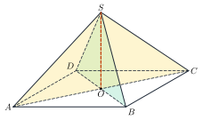
Analysis: Look for two common points.
Phân tích: Tìm hai điểm chung.
\(S\) belongs to both planes.
\(S\) thuộc cả hai mặt phẳng.
\(O\in AC\subset(SAC)\) and \(O\in BD\subset(SBD)\).
\(O\in AC\subset(SAC)\) và \(O\in BD\subset(SBD)\).
\((SAC)\cap(SBD)=SO\).
\((SAC)\cap(SBD)=SO\).
ExampleVí dụ 4IntermediateTrung bình – Common line with a point on an edgeGiao tuyến khi có điểm trên cạnh
\(M\) is the midpoint of \(SC\). Find the line of intersection of \((MBD)\) and \((SAC)\).
\(M\) là trung điểm của \(SC\). Tìm giao tuyến của \((MBD)\) và \((SAC)\).
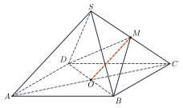
Analysis: \(M\) is in both planes; find one more common point.
Phân tích: \(M\) thuộc cả hai mặt phẳng; tìm thêm một điểm chung.
\(M\in SC\subset(SAC)\) and \(M\in(MBD)\).
\(M\in SC\subset(SAC)\) và \(M\in(MBD)\).
\(O\in BD\subset(MBD)\) and \(O\in AC\subset(SAC)\).
\(O\in BD\subset(MBD)\) và \(O\in AC\subset(SAC)\).
\((MBD)\cap(SAC)=MO\).
\((MBD)\cap(SAC)=MO\).
ExampleVí dụ 5AdvancedNâng cao – A cross-sectionMột thiết diện
With the same figure, find the cross-section of the pyramid by the plane \((MBD)\). What polygon is it?
Với hình vẽ trên, tìm thiết diện của hình chóp cắt bởi mặt phẳng \((MBD)\). Đó là đa giác nào?
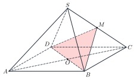
Analysis: Find where the plane meets each face.
Phân tích: Xác định giao tuyến của mặt phẳng với từng mặt của hình chóp.
On the base \((ABCD)\): the segment \(BD\).
Trên đáy \((ABCD)\): đoạn \(BD\).
On the face \((SBC)\): \(MB\); on the face \((SCD)\): \(MD\).
Trên mặt \((SBC)\): \(MB\); trên mặt \((SCD)\): \(MD\).
The cross-section is the triangle \(MBD\).
Thiết diện là tam giác \(MBD\).
7PracticeBài tập luyện tập
A. Multiple ChoiceA. Trắc nghiệm nhiều lựa chọn
There are 6 points in space, no four of them in one plane. How many planes pass through three of them?
Cho 6 điểm trong không gian, không có bốn điểm nào đồng phẳng. Có bao nhiêu mặt phẳng đi qua ba trong số các điểm đó?
Answer: b. \(\mathrm C_{6}^3=20\).
Đáp án b. \(\mathrm C_{6}^3=20\).
A pyramid has a base with 7 sides. How many faces does it have?
Hình chóp có đáy là đa giác 7 cạnh. Số mặt của nó là…
Answer: d. Count the base(s) and the lateral parts: 8.
Đáp án d. Đếm phần đáy và phần bên: 8.
In the figure, the pyramid \(S.ABCD\) has a trapezoid base with \(AB\parallel CD\), and \(I\) is the intersection of \(AD\) and \(BC\). The line of intersection of \((SAD)\) and \((SBC)\) is…
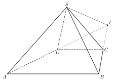
Trong hình vẽ, hình chóp \(S.ABCD\) có đáy là hình thang \(AB\parallel CD\), \(I\) là giao điểm của \(AD\) và \(BC\). Giao tuyến của \((SAD)\) và \((SBC)\) là…
Answer: d. \(S\) and \(I\) are two common points of the two planes.
Đáp án d. \(S\) và \(I\) là hai điểm chung của hai mặt phẳng.
B. True or FalseB. Đúng hoặc sai
Three points always lie in exactly one plane.
Ba điểm bất kì luôn nằm trong đúng một mặt phẳng.
Three collinear points lie in infinitely many planes.
Ba điểm thẳng hàng nằm trong vô số mặt phẳng.
If two points of a line lie in a plane, every point of the line lies in that plane.
Nếu một đường thẳng có hai điểm phân biệt thuộc một mặt phẳng thì mọi điểm của đường thẳng đều thuộc mặt phẳng đó.
This is a basic property (axiom).
Đây là một tính chất thừa nhận.
C. Short AnswerC. Trả lời ngắn
There are 12 points in space, no three of them on one line. How many lines pass through two of them?
Cho 12 điểm trong không gian, không có ba điểm nào thẳng hàng. Có bao nhiêu đường thẳng đi qua hai trong số các điểm đó?
Enter a number.
Nhập một số.
\(\mathrm C_{12}^2=66\).
\(\mathrm C_{12}^2=66\).
In the pyramid \(S.ABCD\) with a parallelogram base, \(O=AC\cap BD\), \(M\) is the midpoint of \(SC\) and \(G\) is the intersection point of \(AM\) and \((SBD)\). Find \(\dfrac{SO}{GO}\).
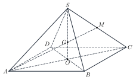
Cho hình chóp \(S.ABCD\) có đáy là hình bình hành, \(O=AC\cap BD\), \(M\) là trung điểm của \(SC\) và \(G\) là giao điểm của \(AM\) với \((SBD)\). Tính \(\dfrac{SO}{GO}\).
Enter a number.
Nhập một số.
\(G=AM\cap SO\) is the centroid of triangle \(SAC\): \(\dfrac{SO}{GO}=3\).
\(G=AM\cap SO\) là trọng tâm tam giác \(SAC\): \(\dfrac{SO}{GO}=3\).
A. Multiple ChoiceA. Trắc nghiệm nhiều lựa chọn
There are 9 points in space, no four of them in one plane. How many planes pass through three of them?
Cho 9 điểm trong không gian, không có bốn điểm nào đồng phẳng. Có bao nhiêu mặt phẳng đi qua ba trong số các điểm đó?
Answer: b. \(\mathrm C_{9}^3=84\).
Đáp án b. \(\mathrm C_{9}^3=84\).
A prism has a base with 4 sides. How many edges does it have?
Hình lăng trụ có đáy là đa giác 4 cạnh. Số cạnh của nó là…
Answer: a. Count the base(s) and the lateral parts: 12.
Đáp án a. Đếm phần đáy và phần bên: 12.
In the figure, the pyramid \(S.ABCD\) has a parallelogram base with center \(O\), and \(M\) is the midpoint of \(SC\). The line of intersection of \((MBD)\) and \((SAC)\) is…
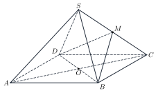
Trong hình vẽ, hình chóp \(S.ABCD\) có đáy là hình bình hành tâm \(O\), \(M\) là trung điểm của \(SC\). Giao tuyến của \((MBD)\) và \((SAC)\) là…
Answer: d. \(M\) and \(O\) are two common points of the two planes.
Đáp án d. \(M\) và \(O\) là hai điểm chung của hai mặt phẳng.
B. True or FalseB. Đúng hoặc sai
Two different planes can have exactly one common point.
Hai mặt phẳng phân biệt có thể có đúng một điểm chung.
If they share a point, they share a whole line.
Nếu có điểm chung thì chúng có chung cả một đường thẳng.
A tetrahedron has 4 faces and 6 edges.
Tứ diện có 4 mặt và 6 cạnh.
4 triangular faces, 6 edges.
4 mặt tam giác, 6 cạnh.
C. Short AnswerC. Trả lời ngắn
There are 6 points in space, no three of them on one line. How many lines pass through two of them?
Cho 6 điểm trong không gian, không có ba điểm nào thẳng hàng. Có bao nhiêu đường thẳng đi qua hai trong số các điểm đó?
Enter a number.
Nhập một số.
\(\mathrm C_{6}^2=15\).
\(\mathrm C_{6}^2=15\).
In the pyramid \(S.ABCD\) with a parallelogram base, \(O=AC\cap BD\), \(M\) is the midpoint of \(SC\) and \(G\) is the intersection point of \(AM\) and \((SBD)\). Find \(\dfrac{SG}{GO}\).
Cho hình chóp \(S.ABCD\) có đáy là hình bình hành, \(O=AC\cap BD\), \(M\) là trung điểm của \(SC\) và \(G\) là giao điểm của \(AM\) với \((SBD)\). Tính \(\dfrac{SG}{GO}\).
Enter a number.
Nhập một số.
\(G=AM\cap SO\) is the centroid of triangle \(SAC\): \(\dfrac{SG}{GO}=2\).
\(G=AM\cap SO\) là trọng tâm tam giác \(SAC\): \(\dfrac{SG}{GO}=2\).
A. Multiple ChoiceA. Trắc nghiệm nhiều lựa chọn
There are 8 points in space, no four of them in one plane. How many planes pass through three of them?
Cho 8 điểm trong không gian, không có bốn điểm nào đồng phẳng. Có bao nhiêu mặt phẳng đi qua ba trong số các điểm đó?
Answer: b. \(\mathrm C_{8}^3=56\).
Đáp án b. \(\mathrm C_{8}^3=56\).
A prism has a base with 4 sides. How many vertices does it have?
Hình lăng trụ có đáy là đa giác 4 cạnh. Số đỉnh của nó là…
Answer: d. Count the base(s) and the lateral parts: 8.
Đáp án d. Đếm phần đáy và phần bên: 8.
In the figure, the pyramid \(S.ABCD\) has a parallelogram base, and \(O\) is the intersection of \(AC\) and \(BD\). The line of intersection of \((SAC)\) and \((SBD)\) is…
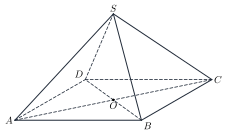
Trong hình vẽ, hình chóp \(S.ABCD\) có đáy là hình bình hành, \(O\) là giao điểm của \(AC\) và \(BD\). Giao tuyến của \((SAC)\) và \((SBD)\) là…
Answer: d. \(S\) and \(O\) are two common points of the two planes.
Đáp án d. \(S\) và \(O\) là hai điểm chung của hai mặt phẳng.
B. True or FalseB. Đúng hoặc sai
A line and a point on it determine exactly one plane.
Một đường thẳng và một điểm thuộc nó xác định đúng một mặt phẳng.
The point must be off the line.
Điểm phải không thuộc đường thẳng.
There exist four points that do not lie in one plane.
Tồn tại bốn điểm không cùng thuộc một mặt phẳng.
This is a basic property (axiom).
Đây là một tính chất thừa nhận.
C. Short AnswerC. Trả lời ngắn
There are 8 points in space, no three of them on one line. How many lines pass through two of them?
Cho 8 điểm trong không gian, không có ba điểm nào thẳng hàng. Có bao nhiêu đường thẳng đi qua hai trong số các điểm đó?
Enter a number.
Nhập một số.
\(\mathrm C_{8}^2=28\).
\(\mathrm C_{8}^2=28\).
In the pyramid \(S.ABCD\) with a parallelogram base, \(O=AC\cap BD\), \(M\) is the midpoint of \(SC\) and \(G\) is the intersection point of \(AM\) and \((SBD)\). Find \(\dfrac{AG}{GM}\).
Cho hình chóp \(S.ABCD\) có đáy là hình bình hành, \(O=AC\cap BD\), \(M\) là trung điểm của \(SC\) và \(G\) là giao điểm của \(AM\) với \((SBD)\). Tính \(\dfrac{AG}{GM}\).
Enter a number.
Nhập một số.
\(G=AM\cap SO\) is the centroid of triangle \(SAC\): \(\dfrac{AG}{GM}=2\).
\(G=AM\cap SO\) là trọng tâm tam giác \(SAC\): \(\dfrac{AG}{GM}=2\).
D. Self-practice: Multiple ChoiceD. Tự luyện: trắc nghiệm
In the tetrahedron \(ABCD\), \(M\in AB\), \(N\in AC\) with \(AM=\tfrac{1}{2}\,AB\), \(AN=\tfrac{2}{3}\,AC\), and \(I=MN\cap BC\). The intersection point of \(MN\) and \((BCD)\) is…
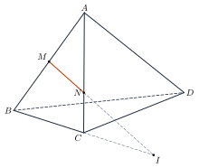
Cho tứ diện \(ABCD\), \(M\in AB\), \(N\in AC\) sao cho \(AM=\tfrac{1}{2}\,AB\), \(AN=\tfrac{2}{3}\,AC\), và \(I=MN\cap BC\). Giao điểm của \(MN\) và \((BCD)\) là…
Answer: b. \(I\in MN\) and \(I\in BC\subset(BCD)\).
Đáp án b. \(I\in MN\) và \(I\in BC\subset(BCD)\).
In the tetrahedron \(ABCD\), \(M, N\) are the midpoints of \(AB, AC\) and \(P\) is the midpoint of \(CD\). The cross-section of the solid by the plane \((MNP)\) is…
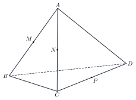
Cho tứ diện \(ABCD\), \(M, N\) là trung điểm của \(AB, AC\) và \(P\) là trung điểm của \(CD\). Thiết diện của khối cắt bởi mặt phẳng \((MNP)\) là…
Answer: d. The plane meets 4 edges of the solid, so the section has 4 vertices.
Đáp án d. Mặt phẳng cắt 4 cạnh của khối nên thiết diện có 4 đỉnh.
In the tetrahedron \(ABCD\), \(M\in AB\), \(N\in AC\), \(P\in AD\) with \(AM=\tfrac{1}{4}\,AB\), \(AN=\tfrac{2}{5}\,AC\), \(AP=\tfrac{3}{5}\,AD\); \(I=MN\cap BC\), \(J=NP\cap CD\), \(K=MP\cap BD\). Which three points are collinear?
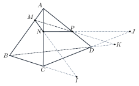
Cho tứ diện \(ABCD\), \(M\in AB\), \(N\in AC\), \(P\in AD\) với \(AM=\tfrac{1}{4}\,AB\), \(AN=\tfrac{2}{5}\,AC\), \(AP=\tfrac{3}{5}\,AD\); \(I=MN\cap BC\), \(J=NP\cap CD\), \(K=MP\cap BD\). Ba điểm nào thẳng hàng?
Answer: d. \(I, J, K\) are common points of \((MNP)\) and \((BCD)\), so they lie on the line of intersection.
Đáp án d. \(I, J, K\) là các điểm chung của \((MNP)\) và \((BCD)\) nên cùng nằm trên giao tuyến.
Through which of the following can we draw exactly one plane?
Có đúng một mặt phẳng đi qua đối tượng nào sau đây?
Answer: b. A plane is determined by three non-collinear points, a line and a point off it, two intersecting lines or two parallel lines.
Đáp án b. Mặt phẳng được xác định bởi ba điểm không thẳng hàng, một đường thẳng và một điểm ngoài nó, hai đường thẳng cắt nhau hoặc hai đường thẳng song song.
In the pyramid \(S.ABCD\) with a parallelogram base, \(O\) is the intersection of \(AC\) and \(BD\). The point \(O\) lies in which plane?
Cho hình chóp \(S.ABCD\) có đáy là hình bình hành, \(O\) là giao điểm của \(AC\) và \(BD\). Điểm \(O\) thuộc mặt phẳng nào?
Answer: b. \(O\) lies on a line of the plane \((SBD)\).
Đáp án b. \(O\) thuộc một đường thẳng nằm trong mặt phẳng \((SBD)\).
How many common points do the planes \((SAB)\) and \((SBC)\) of the pyramid \(S.ABCD\) have?
Hai mặt phẳng \((SAB)\) và \((SBC)\) của hình chóp \(S.ABCD\) có bao nhiêu điểm chung?
Answer: d. Two different planes with a common point meet along a whole line.
Đáp án d. Hai mặt phẳng phân biệt có điểm chung thì cắt nhau theo cả một đường thẳng.
In the tetrahedron \(ABCD\), \(M, N, P\) lie on \(AB, AC, AD\) with \(\dfrac{AM}{AB}=\dfrac{AN}{AC}=\dfrac{AP}{AD}=\dfrac{1}{4}\). The ratio of the area of triangle \(MNP\) to the area of triangle \(BCD\) is…
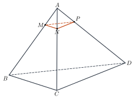
Cho tứ diện \(ABCD\), các điểm \(M, N, P\) thuộc \(AB, AC, AD\) sao cho \(\dfrac{AM}{AB}=\dfrac{AN}{AC}=\dfrac{AP}{AD}=\dfrac{1}{4}\). Tỉ số diện tích tam giác \(MNP\) và tam giác \(BCD\) bằng…
Answer: d. \(MN, NP, PM\) are parallel to \(BC, CD, DB\) with ratio \(\dfrac{1}{4}\): area ratio \(\left(\dfrac{1}{4}\right)^2=\dfrac{1}{16}\).
Đáp án d. \(MN, NP, PM\) song song với \(BC, CD, DB\) với tỉ số \(\dfrac{1}{4}\): tỉ số diện tích \(\left(\dfrac{1}{4}\right)^2=\dfrac{1}{16}\).
In the pyramid \(S.ABCD\) with a parallelogram base, \(O=AC\cap BD\) and \(M\) is the midpoint of \(SC\). Which line lies in the plane \((SAC)\)?
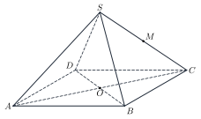
Cho hình chóp \(S.ABCD\) có đáy là hình bình hành, \(O=AC\cap BD\), \(M\) là trung điểm của \(SC\). Đường thẳng nào nằm trong mặt phẳng \((SAC)\)?
Answer: a. Both points of \(AM\) belong to \((SAC)\).
Đáp án a. Hai điểm của \(AM\) đều thuộc \((SAC)\).
D. Self-practice: Multiple ChoiceD. Tự luyện: trắc nghiệm
In the tetrahedron \(ABCD\), \(N\in AC\), \(P\in AD\) with \(AN=\tfrac{1}{3}\,AC\), \(AP=\tfrac{3}{4}\,AD\), and \(J=NP\cap CD\). The intersection point of \(NP\) and \((BCD)\) is…
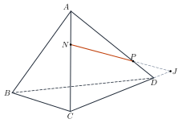
Cho tứ diện \(ABCD\), \(N\in AC\), \(P\in AD\) sao cho \(AN=\tfrac{1}{3}\,AC\), \(AP=\tfrac{3}{4}\,AD\), và \(J=NP\cap CD\). Giao điểm của \(NP\) và \((BCD)\) là…
Answer: d. \(J\in NP\) and \(J\in CD\subset(BCD)\).
Đáp án d. \(J\in NP\) và \(J\in CD\subset(BCD)\).
In the pyramid \(S.ABCD\) with a parallelogram base, \(M, N, P\) are the midpoints of \(SA, SB, SC\). The cross-section of the solid by the plane \((MNP)\) is…
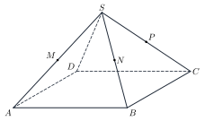
Cho hình chóp \(S.ABCD\) có đáy là hình bình hành, \(M, N, P\) lần lượt là trung điểm của \(SA, SB, SC\). Thiết diện của khối cắt bởi mặt phẳng \((MNP)\) là…
Answer: d. The plane meets 4 edges of the solid, so the section has 4 vertices.
Đáp án d. Mặt phẳng cắt 4 cạnh của khối nên thiết diện có 4 đỉnh.
In the tetrahedron \(ABCD\), \(M\in AB\), \(N\in AC\), \(P\in AD\) with \(AM=\tfrac{1}{4}\,AB\), \(AN=\tfrac{2}{5}\,AC\), \(AP=\tfrac{2}{3}\,AD\); \(I=MN\cap BC\), \(J=NP\cap CD\), \(K=MP\cap BD\). Which three points are collinear?
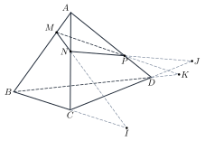
Cho tứ diện \(ABCD\), \(M\in AB\), \(N\in AC\), \(P\in AD\) với \(AM=\tfrac{1}{4}\,AB\), \(AN=\tfrac{2}{5}\,AC\), \(AP=\tfrac{2}{3}\,AD\); \(I=MN\cap BC\), \(J=NP\cap CD\), \(K=MP\cap BD\). Ba điểm nào thẳng hàng?
Answer: b. \(I, J, K\) are common points of \((MNP)\) and \((BCD)\), so they lie on the line of intersection.
Đáp án b. \(I, J, K\) là các điểm chung của \((MNP)\) và \((BCD)\) nên cùng nằm trên giao tuyến.
Which of the following determines exactly one plane?
Trường hợp nào sau đây xác định đúng một mặt phẳng?
Answer: c. A plane is determined by three non-collinear points, a line and a point off it, two intersecting lines or two parallel lines.
Đáp án c. Mặt phẳng được xác định bởi ba điểm không thẳng hàng, một đường thẳng và một điểm ngoài nó, hai đường thẳng cắt nhau hoặc hai đường thẳng song song.
In the pyramid \(S.ABCD\) with a parallelogram base, \(M\) is the midpoint of \(SC\). The point \(M\) lies in which plane?
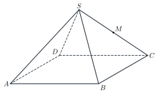
Cho hình chóp \(S.ABCD\) có đáy là hình bình hành, \(M\) là trung điểm của \(SC\). Điểm \(M\) thuộc mặt phẳng nào?
Answer: a. \(M\) lies on a line of the plane \((SBC)\).
Đáp án a. \(M\) thuộc một đường thẳng nằm trong mặt phẳng \((SBC)\).
How many common points do the planes \((ABC)\) and \((ABD)\) of the tetrahedron \(ABCD\) have?
Hai mặt phẳng \((ABC)\) và \((ABD)\) của tứ diện \(ABCD\) có bao nhiêu điểm chung?
Answer: b. Two different planes with a common point meet along a whole line.
Đáp án b. Hai mặt phẳng phân biệt có điểm chung thì cắt nhau theo cả một đường thẳng.
In the tetrahedron \(ABCD\), \(M, N, P\) lie on \(AB, AC, AD\) with \(\dfrac{AM}{AB}=\dfrac{AN}{AC}=\dfrac{AP}{AD}=\dfrac{2}{3}\). The ratio of the area of triangle \(MNP\) to the area of triangle \(BCD\) is…
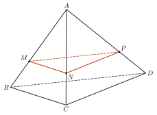
Cho tứ diện \(ABCD\), các điểm \(M, N, P\) thuộc \(AB, AC, AD\) sao cho \(\dfrac{AM}{AB}=\dfrac{AN}{AC}=\dfrac{AP}{AD}=\dfrac{2}{3}\). Tỉ số diện tích tam giác \(MNP\) và tam giác \(BCD\) bằng…
Answer: a. \(MN, NP, PM\) are parallel to \(BC, CD, DB\) with ratio \(\dfrac{2}{3}\): area ratio \(\left(\dfrac{2}{3}\right)^2=\dfrac{4}{9}\).
Đáp án a. \(MN, NP, PM\) song song với \(BC, CD, DB\) với tỉ số \(\dfrac{2}{3}\): tỉ số diện tích \(\left(\dfrac{2}{3}\right)^2=\dfrac{4}{9}\).
In the pyramid \(S.ABCD\) with a parallelogram base, \(O=AC\cap BD\) and \(M\) is the midpoint of \(SC\). Which line lies in the plane \((SBD)\)?
Cho hình chóp \(S.ABCD\) có đáy là hình bình hành, \(O=AC\cap BD\), \(M\) là trung điểm của \(SC\). Đường thẳng nào nằm trong mặt phẳng \((SBD)\)?
Answer: d. Both points of \(SB\) belong to \((SBD)\).
Đáp án d. Hai điểm của \(SB\) đều thuộc \((SBD)\).
D. Self-practice: Multiple ChoiceD. Tự luyện: trắc nghiệm
In the pyramid \(S.ABCD\) with a parallelogram base, \(O=AC\cap BD\), \(M\) is the midpoint of \(SC\) and \(G=AM\cap SO\). The intersection point of the line \(AM\) and the plane \((SBD)\) is…
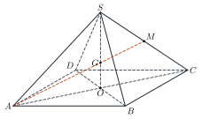
Cho hình chóp \(S.ABCD\) có đáy là hình bình hành, \(O=AC\cap BD\), \(M\) là trung điểm của \(SC\) và \(G=AM\cap SO\). Giao điểm của đường thẳng \(AM\) và mặt phẳng \((SBD)\) là…
Answer: b. \(G\in AM\) and \(G\in SO\subset(SBD)\).
Đáp án b. \(G\in AM\) và \(G\in SO\subset(SBD)\).
In the tetrahedron \(ABCD\), \(M, N, P\) are the midpoints of \(AB, AC, AD\). The cross-section of the solid by the plane \((MNP)\) is…
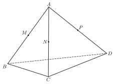
Cho tứ diện \(ABCD\), \(M, N, P\) lần lượt là trung điểm của \(AB, AC, AD\). Thiết diện của khối cắt bởi mặt phẳng \((MNP)\) là…
Answer: a. The plane meets 3 edges of the solid, so the section has 3 vertices.
Đáp án a. Mặt phẳng cắt 3 cạnh của khối nên thiết diện có 3 đỉnh.
In the tetrahedron \(ABCD\), \(M\in AB\), \(N\in AC\), \(P\in AD\) with \(AM=\tfrac{1}{3}\,AB\), \(AN=\tfrac{1}{2}\,AC\), \(AP=\tfrac{2}{3}\,AD\); \(I=MN\cap BC\), \(J=NP\cap CD\), \(K=MP\cap BD\). Which three points are collinear?
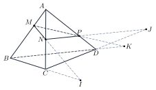
Cho tứ diện \(ABCD\), \(M\in AB\), \(N\in AC\), \(P\in AD\) với \(AM=\tfrac{1}{3}\,AB\), \(AN=\tfrac{1}{2}\,AC\), \(AP=\tfrac{2}{3}\,AD\); \(I=MN\cap BC\), \(J=NP\cap CD\), \(K=MP\cap BD\). Ba điểm nào thẳng hàng?
Answer: c. \(I, J, K\) are common points of \((MNP)\) and \((BCD)\), so they lie on the line of intersection.
Đáp án c. \(I, J, K\) là các điểm chung của \((MNP)\) và \((BCD)\) nên cùng nằm trên giao tuyến.
Which of the following does NOT determine a unique plane?
Trường hợp nào sau đây KHÔNG xác định được duy nhất một mặt phẳng?
Answer: b. A plane is determined by three non-collinear points, a line and a point off it, two intersecting lines or two parallel lines.
Đáp án b. Mặt phẳng được xác định bởi ba điểm không thẳng hàng, một đường thẳng và một điểm ngoài nó, hai đường thẳng cắt nhau hoặc hai đường thẳng song song.
In the pyramid \(S.ABCD\) with a parallelogram base, \(N\) is the midpoint of \(SA\). The point \(N\) lies in which plane?
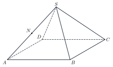
Cho hình chóp \(S.ABCD\) có đáy là hình bình hành, \(N\) là trung điểm của \(SA\). Điểm \(N\) thuộc mặt phẳng nào?
Answer: b. \(N\) lies on a line of the plane \((SAC)\).
Đáp án b. \(N\) thuộc một đường thẳng nằm trong mặt phẳng \((SAC)\).
How many common points do the planes \((SAC)\) and \((SBD)\) of the pyramid \(S.ABCD\) have?
Hai mặt phẳng \((SAC)\) và \((SBD)\) của hình chóp \(S.ABCD\) có bao nhiêu điểm chung?
Answer: a. Two different planes with a common point meet along a whole line.
Đáp án a. Hai mặt phẳng phân biệt có điểm chung thì cắt nhau theo cả một đường thẳng.
In the tetrahedron \(ABCD\), \(M, N, P\) lie on \(AB, AC, AD\) with \(\dfrac{AM}{AB}=\dfrac{AN}{AC}=\dfrac{AP}{AD}=\dfrac{1}{3}\). The ratio of the area of triangle \(MNP\) to the area of triangle \(BCD\) is…
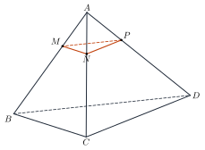
Cho tứ diện \(ABCD\), các điểm \(M, N, P\) thuộc \(AB, AC, AD\) sao cho \(\dfrac{AM}{AB}=\dfrac{AN}{AC}=\dfrac{AP}{AD}=\dfrac{1}{3}\). Tỉ số diện tích tam giác \(MNP\) và tam giác \(BCD\) bằng…
Answer: a. \(MN, NP, PM\) are parallel to \(BC, CD, DB\) with ratio \(\dfrac{1}{3}\): area ratio \(\left(\dfrac{1}{3}\right)^2=\dfrac{1}{9}\).
Đáp án a. \(MN, NP, PM\) song song với \(BC, CD, DB\) với tỉ số \(\dfrac{1}{3}\): tỉ số diện tích \(\left(\dfrac{1}{3}\right)^2=\dfrac{1}{9}\).
In the pyramid \(S.ABCD\) with a parallelogram base, \(O=AC\cap BD\) and \(M\) is the midpoint of \(SC\). Which line lies in the plane \((ABM)\)?
Cho hình chóp \(S.ABCD\) có đáy là hình bình hành, \(O=AC\cap BD\), \(M\) là trung điểm của \(SC\). Đường thẳng nào nằm trong mặt phẳng \((ABM)\)?
Answer: d. Both points of \(AM\) belong to \((ABM)\).
Đáp án d. Hai điểm của \(AM\) đều thuộc \((ABM)\).
8Common MistakesLỗi thường gặp
Three collinear points. They do not determine one plane.
Ba điểm thẳng hàng. Chúng không xác định được một mặt phẳng duy nhất.
One common point is not the intersection. The line of intersection needs two common points.
Một điểm chung chưa đủ. Giao tuyến cần hai điểm chung.
Mixing up faces and edges of pyramids. A pyramid over an \(n\)-gon has \(n+1\) faces and \(2n\) edges.
Nhầm số mặt và số cạnh. Hình chóp đáy \(n\)-giác có \(n+1\) mặt và \(2n\) cạnh.
Forgetting the base in a cross-section. Check the plane against every face.
Bỏ sót mặt đáy khi tìm thiết diện. Cần xét mặt phẳng cắt với từng mặt.
9Lesson SummaryTổng kết
Three non-collinear points determine one plane; a line and a point off it, two intersecting lines, two parallel lines also.
Ba điểm không thẳng hàng xác định một mặt phẳng; một đường thẳng và một điểm ngoài đường, hai đường cắt nhau, hai đường song song cũng vậy.
Line of intersection of two planes: find two common points.
Giao tuyến của hai mặt phẳng: tìm hai điểm chung.
Pyramid over an \(n\)-gon: \(n+1\) vertices, \(2n\) edges, \(n+1\) faces.
Hình chóp đáy \(n\)-giác: \(n+1\) đỉnh, \(2n\) cạnh, \(n+1\) mặt.
Key English words: plane, line of intersection, common point, cross-section.
Thuật ngữ cần nhớ (chạm vào để xem tiếng Anh): mặt phẳng, giao tuyến, điểm chung, thiết diện.